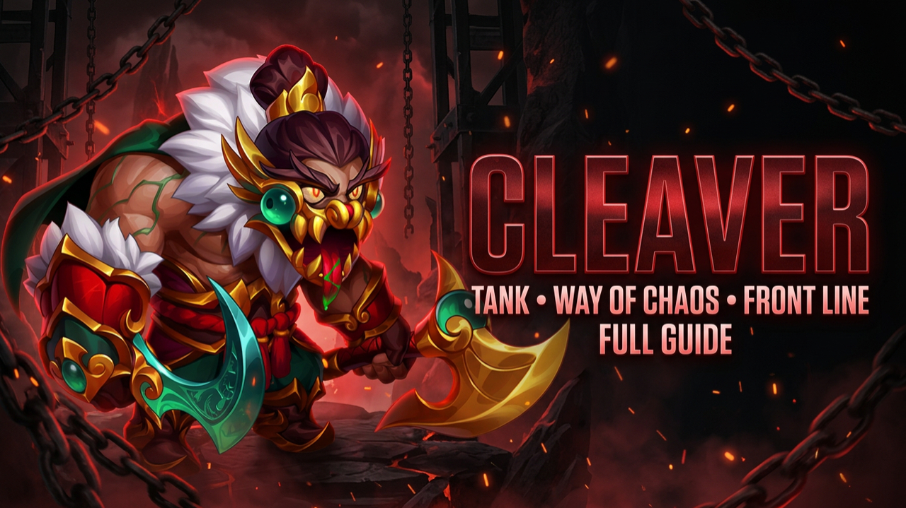

The complete guide to the reworked Cleaver — his updated skills,
Relics, development priorities, Chaos interactions, counters
and team examples.

Cleaver is a Chaos Tank positioned on the
front line. His rework gives him considerably
more offensive pressure while preserving the durability and
positioning disruption that have always defined the hero.
CLEAVER REWORK
The updated Cleaver brings Pure Damage into more of his kit,
expands his battlefield pressure through Relics, introduces
healing reduction and gives him new ways to influence longer
battles. This guide combines those changes with his complete
development priorities.
UPDATED KIT
SKILLS
Rusty Hook
POSITIONING • PURE DAMAGE
Cleaver throws his hook at the
farthest enemy, pulling that hero directly
into battle and dealing Pure Damage.
Following the rework, Cleaver's
basic attacks also deal Pure Damage.
This gives him consistent offensive pressure while Rusty
Hook continues to disrupt enemy positioning and expose
protected targets.
Putrefaction
AREA PRESSURE
Putrefaction can now be upgraded to
Legendary, repeatedly dealing Pure Damage
to Cleaver himself and to nearby enemies over several
seconds.
The self-damage creates important interactions with
Cleaver's surrounding team, while the repeated area damage
applies constant pressure to nearby enemies.
Mutilation
PURE DAMAGE • STUN
Cleaver strikes enemies in front of him,
dealing Pure Damage and stunning nearby targets.
The stun chance is reduced against enemies above
Level 120, but the combination of damage
and crowd control can still strongly influence the fight.
Heavyweight
PASSIVE
Heavyweight provides Cleaver with additional
Strength. That extra Strength reinforces
his durability and ability to remain active on the
frontline while dealing damage and controlling enemies.
NEW DEVELOPMENT SYSTEM
RELICS
Cleaver's Relics expand his reworked identity around area
pressure, healing reduction, battlefield interactions and
increased offensive potential.
RELIC LEVEL 1
Miasma
Applies an effect to the
central enemy for seven seconds, dealing
damage to all enemies around that target every
half second.
When Putrefaction is upgraded, affected enemies also
receive its healing-reduction interaction.
RELIC LEVEL 10
Putrefaction Relic
Adds a 60% healing reduction to enemies
inside Putrefaction's area of effect or affected by
Miasma.
If an enemy is affected by both effects simultaneously,
the healing reduction is doubled.
LEGENDARY RELIC • LEVEL 20
Heavyweight
Whenever Cleaver or one of his allies takes damage from
an enemy hero, all negative effects are removed
from that enemy.
The effect remains active while Cleaver is alive.
LEGENDARY RELIC • LEVEL 30
Carnage
Carnage increases Cleaver's damage for every enemy
around him.
This can become particularly relevant while Cleaver is
surrounded by enemies in the middle of frontline combat.
At the time of the battle testing used for this guide,
Heavyweight and Carnage had not yet been unlocked.
Their descriptions are therefore included here, but their
full battle impact was not part of those tests.
DEVELOPMENT PRIORITY
SKINS
01
ARMOR
02
HEALTH
03
STRENGTH
04
TOUGHNESS
05
MAGIC DEFENSE
06
PHYSICAL ATTACK
NEW SKIN
Inner Demon Skin — Health
Cleaver's new Inner Demon Skin provides
Health, giving an already durable frontline
tank additional staying power in battle.
Cleaver's primary responsibility remains surviving and
controlling the frontline. Defensive development therefore
remains the foundation of his build.
If Cleaver receives additional
Armor or Health Skins in the future,
they should immediately receive high priority.
DEVELOPMENT PRIORITY
GLYPHS
01
ARMOR
02
HEALTH
03
STRENGTH
04
MAGIC DEFENSE
05
PHYSICAL ATTACK
Bring every Glyph to Level 40 first before
pushing individual Glyphs significantly further, unless
you're specifically progressing Skill Classes.
DEVELOPMENT PRIORITY
ARTIFACTS
01
Book
Increases Armor and Magic Defense, strengthening both of
Cleaver's primary defensive stats simultaneously.
02
Weapon
Grants Armor to the entire team whenever Cleaver activates
Rusty Hook.
03
Ring
Increases Strength, providing additional durability and
supporting Cleaver's overall scaling.
GIFT OF THE ELEMENTS
MAX IT
Maximize the Gift of the Elements and prioritize
Armor and Health. Cleaver needs to stay
alive to continue disrupting the enemy formation, applying
pressure and controlling the frontline.
TWO STRONG OPTIONS
TALISMANS
FIRST TALISMAN
Strength + Health
Strength and Health reinforce Cleaver's core tank role,
improving the durability he needs to remain active on the
frontline.
ETERNAL FRONTIER
SECOND TALISMAN
Crushing + Toughness
Provides Cleaver with a combination of Crushing and
Toughness, giving him another development option beyond
his first Talisman.
VIP PROGRESSION
Both Talismans are valuable. Cleaver can still perform
extremely well with proper investment even if only one
option is available on your account.
CHAOS INTERACTIONS
SYNERGIES & MECHANICS
Aidan
Putrefaction damages Cleaver himself. That allied Health
sacrifice creates additional value for Aidan inside
Chaos compositions.
Xe'Sha
Cleaver's self-sacrifice through Putrefaction can benefit
Xe'Sha, turning his self-damage into additional offensive
value inside Chaos teams.
BATTLE TESTING
TEAM EXAMPLES
The reworked Cleaver was tested inside several different
compositions. These examples demonstrate his flexibility
rather than defining one mandatory Cleaver team.
TEAM 01
Cleaver • Kayla • Crow • Guus • Aidan
This composition combines Cleaver's control and pressure
with the offensive potential of Kayla and Crow. Guus and
Aidan help keep the team active during intense periods of
the battle while Cleaver creates openings through
positioning disruption.
TEAM 02
Cleaver • Crow • Peech • Kendle • Aidan
This setup explores a more aggressive but still durable
Cleaver composition. Crow contributes offensive pressure,
Peech and Kendle add additional tools, and Aidan provides
sustain for longer fights.
TEAM 03
Cleaver • Byrna • Guus • Kendle • Aidan
A more survival-oriented composition. Guus and Aidan help
stabilize the team while Byrna and Kendle provide
additional options. The longer Cleaver remains alive, the
more opportunities he has to apply his control and effects.
TEAM 04
Cleaver • Tristan • Yasmine • Guus • Fafnir
Cleaver acts as the frontline anchor while Tristan and
Yasmine provide major offensive potential. His durability
and positioning control create space for the rest of the
lineup to apply pressure.
TEAM 05
Cleaver • Phobos • Dorian • Kendle • Aidan
This composition combines Cleaver's durability and control
with several forms of sustain and utility. Phobos provides
additional control, while Dorian and Aidan help the team
survive longer battles.
These teams are examples from battle testing, not a claim that
Cleaver is limited to these formations. His rework allows him
to function with several different types of compositions
depending on the opponent and the role required from him.
DISRUPTING CLEAVER
COUNTERS & KEY INTERACTIONS
HOOK INTERACTION
Dorian
If Cleaver pulls Dorian forward, Dorian's Vampirism Aura
can begin supporting frontline allies instead, potentially
making them considerably harder to eliminate.
DISPLACEMENT PROTECTION
Andvari
Living Earth prevents displacement effects, stopping
Cleaver from pulling protected heroes with Rusty Hook.
REFLECTED PRESSURE
Peppy + Aurora
Peppy's shield together with Aurora's Rainbow Halo can
reflect large amounts of Magic Damage back into Cleaver,
creating a dangerous interaction for him.
CHARM
Lian
Lian can interrupt Rusty Hook by charming Cleaver when he
targets her, breaking the hook interaction.
TRANSFORMATION
Somna
Somna can transform Cleaver into a sheep when he attempts
to hook her, disrupting one of his defining mechanics.
BLIND
Electra
Electra can blind Cleaver, causing several of his damaging
attacks to miss.
SURVIVABILITY
Martha
Martha can survive surprisingly well after being pulled,
potentially buying enough time for her team to recover
from Cleaver's positioning disruption.
ENERGY CONTROL
Jorgen
Torment of Powerlessness can prevent Cleaver from gaining
Energy, delaying Rusty Hook activations and reducing his
battlefield impact.
FINAL TAKEAWAY
THE NEW CLEAVER
Cleaver's rework gives him considerably more depth than a
traditional frontline tank.
He now combines Pure Damage, crowd control,
positioning disruption, area pressure and healing
reduction while retaining the durability required
to anchor the frontline.
His tested compositions also demonstrate that he does not
need to be locked into one specific lineup. Depending on
the heroes around him, Cleaver can support aggressive,
sustainable or control-oriented approaches.
The final two Legendary Relics —
Heavyweight and Carnage — were not unlocked
during the testing used for this guide, so their complete
battle impact remains an important area for future testing.
GODS OF ALLIANCE
WATCH THE CLEAVER GUIDE
Watch the full guide for Cleaver's development priorities,
synergies and counters.